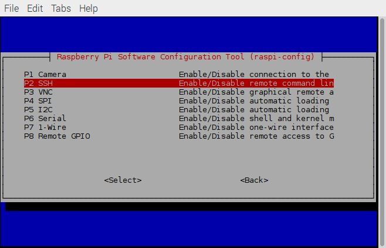

Connecting a Raspberry Pi to a home Linux network
I recently purchased a Raspberry Pi 3 Model B and have been tinkering with it for a few days. One of the first things I decided to do was to set it up so that I could access it from my laptop over my home network. This post contains a step-by-step explanation of the process. If you have any questions, feel free to leave a comment or send me an e-mail.
Collect the necessary information
To start, we need to collect a little bit of information about the
home network. My internet is provided by a local company that supplied
me with a Thomson TWG-870 router. This router determines the IP
addresses of all the devices on my network. Since my laptop is running
Linux (Debian Jessie, to be exact), I can use the netstat
command to get the IP address of the router.:
kmdouglass@kmd-laptop:~$ netstat -rn Kernel IP routing table Destination Gateway Genmask Flags MSS Window irtt Iface 0.0.0.0 192.168.0.1 0.0.0.0 UG 0 0 0 wlan0
The key part of this output is the Gateway column. A gateway
is the IP address of the device (i.e. the router) that provides
devices on a local network with access to the Internet.
Knowing the IP address of the gateway, we can next trying entering it directly into the address bar of a web browser. On my machine, this opened a dialog asking for a username and password. (If you're not sure what these are, try asking your ISP. And if you haven't changed them from the default settings, then you really should do this.) After entering them and clicking OK, the browser window displayed the general configuration pages for the router.
The next few steps will depend on the specific router. The information we are after is the list of IP addresses that the router reserves for static IP's. A static IP address is an address that is assigned to a device and doesn't change. Many routers have a so-called DHCP server that dynamically assigns IP addresses to devices such as smart phones as they log onto the network. We probably want to always find the Pi at the same address, however, so a static IP makes more sense than one that the router dynamically assigns.
To find the list of static IP's on my specific router, I clicked on the link entitled Network in my router's configuration page. The relevant information for me looks like that in the image below:

This information is telling us that the router is reserving addresses 192.168.0.10 to 192.168.0.254 for the DHCP server. We can therefore most probably use 192.168.0.2 through 9 for static IP's. (Remember that 192.168.0.1 is already taken; it's the address of the router.) I tested 192.168.0.2 by pinging it and received no response, so we will use this address for my Raspberry Pi. (Use Ctrl-C to stop pinging the device.):
kmdouglass@kmd-laptop:~$ ping 192.168.0.2 PING 192.168.0.2 (192.168.0.2) 56(84) bytes of data. From 192.168.0.15 icmp_seq=1 Destination Host Unreachable From 192.168.0.15 icmp_seq=2 Destination Host Unreachable From 192.168.0.15 icmp_seq=3 Destination Host Unreachable ^C --- 192.168.0.2 ping statistics --- 4 packets transmitted, 0 received, +3 errors, 100% packet loss, time 3014ms pipe 3
For the next step, we need to collect the broadcast and subnet mask of
the network. We can do this from the laptop that is already connected
to the network by running the sudo ifconfig command. This
command will report information that looks similar to the following
example (note that this is not from my machine but is merely for
illustration)::
eth0 Link encap:Ethernet HWaddr 00:10:5A:1A:DC:65 inet addr:198.209.253.169 Bcast:208.141.109.255 Mask:255.255.255.0 UP BROADCAST RUNNING MULTICAST MTU:1500 Metric:1 RX packets:18940 errors:1 dropped:0 overruns:0 frame:2 TX packets:11554 errors:0 dropped:0 overruns:0 carrier:0 collisions:2 txqueuelen:100 RX bytes:4087250 (3.8 Mb) TX bytes:2499423 (2.3 Mb) Interrupt:11 Base address:0xd000
The very first line tells us that this block of output belongs to the eth0 interface. If you connect to the internet on your laptop through WiFi, then you may need to find the information for the wlan0 interface instead. wlan0 is usually used to refer to wireless interfaces in Ubuntu and Debian Linux.
The first line of output from ifconfig also provides the type of hardware and the ID of the ethernet card. The information we need, however, is on the second line. The device's IP address on the network is inet addr:198.209.253.169, but we don't really need this information. Rather, we need the two numbers that come next. The broadcast IP is reported in Bcast:208.141.109.255 and the subnet mask in Mask:255.255.255.0. The broadcast IP is used to send messages to all devices on the network, whereas the subnet mask is used to separate the parts of an address that identify the network from the parts that identify the devices and possible "sub-networks."
To summarize this section, we need:
- The static IP address that we'll assign to the Pi
- The IP address of the router, i.e. the gateway address
- The broadcast IP
- The subnet mask
Configure the Pi
Now that we have decided on an IP address for the Pi, let's boot it up and configure it to always use this IP address. (I am currently using the NOOBS operating system that came with my Pi starter kit, but this should work with other flavors of Debian Linux as well.)
Once logged on to the Pi, open a terminal and make a backup copy of the file /etc/network/interfaces:
sudo cp /etc/network/interfaces /etc/network/interfaces.bak
Making a backup is good practice; in case we ruin the configuration file, we can simply rewrite it using our backup. Next, open the original interfaces file for editing. In this example, I'll use the nano editor:
sudo nano /etc/network/interfaces
In this file, add the following lines (replacing the addresses with those appropriate for your network):
auto eth0
iface eth0 inet static
address 192.168.0.2
netmask 255.255.255.0
gateway 192.168.0.1
broadcast 192.168.0.255
What do these lines do, you ask? Let's step through them one-by-one.
Start the network interface at boot
First off, we need to identify the network interface. eth0 is the identifier that is referring to the dedicated ethernet port on the Pi. The line auto eth0 means that this interface will be started at boot.
Configure the interface to use a static IP
Next, we see the line iface eth0 inet static. First, iface eth0 means that we are configuring the ethernet port interface that was described in the last section. Following that, inet specifies that the interface uses TCP/IP networking. Finally, static is telling the NOOBS operating system that the device is going to request a static IP address from the router. (I obtained this explanation from this forum post.)
Set the various addresses
The next lines are indented because they are properties of the inet static family. If you've read everything until now, you should be able to figure out what addresses to enter next for each option. The desired static IP address for the Pi should follow the address field; the subnet mask, gateway, and broadcast IP's described above should follow netmask, gateway, and broadcast respectively.
The network property (which is not shown above) contains the network address and is required for 2.0.x kernels. These kernels are pretty old by now, so it is unlikely that you will need to specify this property.
Restart the network interface
Restarting the interface we just configured on our Pi is as simple as entering these terminal commands:
sudo ifdown eth0 sudo ifup eth0
(Remember to replace eth0 with the appropriate interface if yours is different.) If everything goes well, we should be able to use our web browser to navigate on the Internet. We should also be able to ping the Pi from the laptop and vice versa.
Connecting to the Pi
Once the Pi is on the network, we need a way to connect to it from the laptop and other devices so that we can actually use it for something. One way is to use ssh, or Secure SHell. ssh is program that let's us securely log on to other devices through a shell (i.e. terminal). This is useful for when we need to work only on the command line.
If, on the other hand, we want a "Remote Desktop"-like GUI environment, we can use VNC. The documentation for VNC is quite good but detailed; I'll let you read up on it on your own if you're interested in using it.
I'll now briefly explain how we can set up ssh on the Pi.
EDIT: VNC installation
As it turns out, you may run into some problems if you do try to setup VNC by following the documentation in the link above. Namely, the documentation is missing a key step, at least for me. I had to first install the VNC server software on the Pi via:
sudo apt-get update sudo apt-get install realvnc-vnc-server
Even though the rest of this post is about ssh, you may still find this information useful.
Enable ssh on the Pi
We need to enable ssh access to the Pi before we can use it. On the Pi, open a terminal and run the configuration utility::
sudo raspi-config
We should see the following window appear.

Use the keyboard to highlight Interface Options and tap the Enter key. In the following menu, we now should see an option to enable ssh as in the following image. Use the keyboard to highlight P2 SSH (or the relevant menu item if the name is different on your Pi) and hit the Enter key to enable it. Once ssh is enabled, we can hit Esc or select the <Back> option to until we exit the configuration utility.
If you'e following along, you may need to restart your Pi for these changes to take effect.
Log onto the Pi from the laptop
Now for the moment of truth. After restarting the Pi, we need to first ensure that we are not logged in to it. If we are, simply click the Menu button, followed by Shutdown... -> Logout and log out of the session.
Next, open a terminal on the laptop and enter the following command, changing the IP address to whatever was decided upon for the Pi::
ssh pi@192.168.0.2
This command runs the ssh program and asks to sign into the Pi as the
user called pi. After running the command, we may be prompted for
a password to log on if one was set on the Pi. (You did set one,
didn't you?) Once successfully entering the password, we should notice
that the terminal prompt has changed to something like
pi@raspberrypi:~ $. This indicates that we are logged on to
the Pi. If we enter the ls command, we should see the contents
of the Pi's home directory. When we're ready to disconnect from the
Pi, we can simply use the exit command at any time in the
terminal. The prompt should change to reflect that we are back on our
laptop machine when we have successfully exited.
If this is all working as described above, then congratulations on connecting your Pi to your home Linux network! I wish you many happy hours of hacking :)
Further Reading
- The Debian network setup manual is very detailed and describes many, many more aspects of setting up a network than I touched upon here. https://www.debian.org/doc/manuals/debian-reference/ch05.en.html
- The Raspberry Pi documentation about VNC (Virtual Network Computing) is a great resource for setting up a graphical interface to remotely connect to your Pi. https://www.raspberrypi.org/documentation/remote-access/vnc/
Comments
Comments powered by Disqus